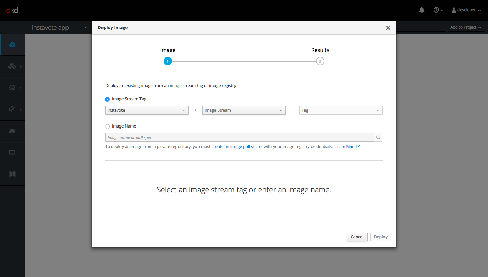
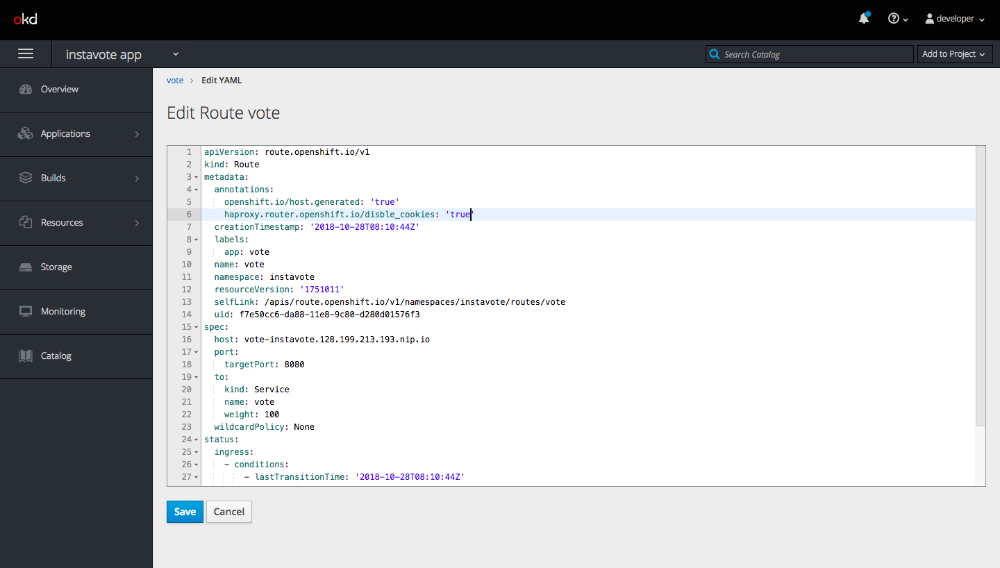

Deploying Vote and Redis with Images - Images, Image Streams, Router Configs
In this section we are talking about deploying the vote app with database redis using already build images. We are also talking about image Streams and Router config in the openshift.
Setting openshift on a remote Fedora server
in this section we are talking about how to set up openshift environment in fedora operating system
System Requirements
-
Physical or virtual system, or an instance running on a public or private IaaS.
-
Base OS
- Docker
- 2 vCPU
- Minimum 8 GB RAM
- Minimum 15 GB hard disk space
- An additional minimum 15 GB unallocated space to be configured using docker-storage-setup
use this link for installation documents.
In this case we need to install docker use the following script for docker installation for fedora.
#!/bin/bash
sudo dnf remove -y docker \
docker-client \
docker-client-latest \
docker-common \
docker-latest \
docker-latest-logrotate \
docker-logrotate \
docker-selinux \
docker-engine-selinux \
docker-engine
sudo dnf -y install dnf-plugins-core
sudo dnf config-manager \
--add-repo \
https://download.docker.com/linux/fedora/docker-ce.repo
sudo dnf install -y docker-ce
sudo systemctl start docker
I: "Validating dokcer installation..."
sudo docker run hello-world
edit the /etc/docker/daemon.json file and add the following
cat > /ete/docker/daemon.json
{
"insecure-registries": [
"172.30.0.0/16"
]
}
After editing the config, reload systemd and restart the Docker daemon.
sudo systemctl daemon-reload
sudo systemctl restart docker
Determine the Docker bridge network container subnet:
docker network inspect -f "{{range .IPAM.Config }}{{ .Subnet }}{{end}}" bridge
then download the openshift
wget -c https://github.com/openshift/origin/releases/download/v3.10.0/openshift-origin-client-tools-v3.10.0-dd10d17-linux-64bit.tar.gz
tar -xvf openshift-origin-client-tools-v3.10.0-dd10d17-linux-64bit.tar.gz
cd openshift-origin-client-tools-v3.10.0-dd10d17-linux-64bit/
mv oc /usr/local/bin/
which oc
[output]
/usr/local/bin/oc
oc cluster up --public-hostname=[host_ip]
Deploying with image
In this section we are talking about deploying app using existing image. just check the openshift status.
oc ststus
[output]
In project demo on server https://128.199.213.193:8443
http://demoapp-demo.128.199.213.193.nip.io to pod port 8080-tcp (svc/demoapp)
dc/demoapp deploys istag/demoapp:latest <-
bc/demoapp source builds https://github.com/devopsdemoapps/devops-demo-app.git#master on openshift/php:7.1
deployment #2 deployed 2 days ago - 5 pods
deployment #1 deployed 2 days ago
svc/mariadb - 172.30.193.105:3306
dc/mariadb deploys openshift/mysql:5.7
deployment #1 failed 2 days ago: config change
3 infos identified, use 'oc status -v' to see details.
create the project using following command.
oc new-project instavote --display-name="instavote app" --description="Sample voting application"
[output]
Now using project "instavote" on server "https://128.199.213.193:8443".
You can add applications to this project with the 'new-app' command. For example, try:
oc new-app centos/ruby-22-centos7~https://github.com/openshift/ruby-ex.git
to build a new example application in Ruby.
then check the projects.
oc get projects
[output]
NAME DISPLAY NAME STATUS
demo demo Active
instavote instavote app Active
myproject My Project Active
deploy the vote application using existing image form docker hub registries.
initcron/oc-vote:v1
click on your created project instavote then click on overview and click on deploy with image. provide some information on this page

here , Provide name, environment variables and labels. then click on deploy.
Exposing vote app with Router
In this section we are talking about how to expose application with router. just check pods, replicas and deployment config.
oc get pods,rc,dc
[output]
NAME READY STATUS RESTARTS AGE
pod/oc-vote-2-7ckd5 1/1 Running 0 32s
pod/oc-vote-2-jwp45 1/1 Running 0 9m
pod/oc-vote-2-qkdrc 1/1 Running 0 33s
pod/oc-vote-2-rlp25 1/1 Running 0 32s
NAME DESIRED CURRENT READY AGE
replicationcontroller/oc-vote-1 0 0 0 10m
replicationcontroller/oc-vote-2 4 4 4 9m
NAME REVISION DESIRED CURRENT TRIGGERED BY
deploymentconfig.apps.openshift.io/oc-vote 2 4 4 config,image(oc-vote:v1)
oc get svc
[output]
NAME TYPE CLUSTER-IP EXTERNAL-IP PORT(S) AGE
oc-vote ClusterIP 172.30.206.1 <none> 80/TCP,8080/TCP 12m
get endpoints using following command.
oc get endpoints
[output]
NAME ENDPOINTS AGE
oc-vote 172.17.0.11:80,172.17.0.12:80,172.17.0.13:80 + 5 more... 14m
get image stream using following command.
oc get is
[output]
NAME DOCKER REPO TAGS UPDATED
oc-vote 172.30.1.1:5000/instavote/oc-vote v1 16 minutes ago
oc describe is/oc-vote
Name: oc-vote
Namespace: instavote
Created: 17 minutes ago
Labels: app=oc-vote
role=vote
Annotations: openshift.io/image.dockerRepositoryCheck=2018-10-28T07:12:40Z
Docker Pull Spec: 172.30.1.1:5000/instavote/oc-vote
Image Lookup: local=false
Unique Images: 1
Tags: 1
v1
tagged from initcron/oc-vote:v1
* initcron/oc-vote@sha256:b05f64d225a8671ecc09d22760a2c76bd65aaf50e12d00b31ab3b4fe6f377b06
17 minutes ago
go to your openshift UI and click on application->routes.

fill all the information
Introduction to oc new-app command
In this section we are talking about to oc new-app command.
oc get all -l app=oc-vote
[output]
NAME READY STATUS RESTARTS AGE
pod/oc-vote-2-7ckd5 1/1 Running 0 24m
pod/oc-vote-2-jwp45 1/1 Running 0 33m
pod/oc-vote-2-qkdrc 1/1 Running 0 24m
pod/oc-vote-2-rlp25 1/1 Running 0 24m
NAME DESIRED CURRENT READY AGE
replicationcontroller/oc-vote-1 0 0 0 34m
replicationcontroller/oc-vote-2 4 4 4 33m
NAME TYPE CLUSTER-IP EXTERNAL-IP PORT(S) AGE
service/oc-vote ClusterIP 172.30.206.1 <none> 80/TCP,8080/TCP 34m
NAME REVISION DESIRED CURRENT TRIGGERED BY
deploymentconfig.apps.openshift.io/oc-vote 2 4 4 config,image(oc-vote:v1)
NAME DOCKER REPO TAGS UPDATED
imagestream.image.openshift.io/oc-vote 172.30.1.1:5000/instavote/oc-vote v1 34 minutes ago
NAME HOST/PORT PATH SERVICES PORT TERMINATION WILDCARD
route.route.openshift.io/oc-vote oc-vote-instavote.128.199.213.193.nip.io oc-vote 8080-tcp edge/Redirect None
oc delete all -l app=oc-vote
[output]
pod "oc-vote-2-7ckd5" deleted
pod "oc-vote-2-jwp45" deleted
pod "oc-vote-2-qkdrc" deleted
pod "oc-vote-2-rlp25" deleted
replicationcontroller "oc-vote-1" deleted
replicationcontroller "oc-vote-2" deleted
service "oc-vote" deleted
deploymentconfig.apps.openshift.io "oc-vote" deleted
imagestream.image.openshift.io "oc-vote" deleted
route.route.openshift.io "oc-vote" deleted
oc new-app --list
search template
oc new-app --search --template=ruby --output=yaml
[output]
apiVersion: v1
items: []
kind: List
metadata: {}
Setup vote app with using oc cli utility
In this section we are redeploying vote application using oc cli.
oc new-app --docker-image=initcron/oc-vote:v1 --name=vote
[output]
--> Found Docker image c97dc33 (2 months old) from Docker Hub for "initcron/oc-vote:v1"
* An image stream will be created as "vote:v1" that will track this image
* This image will be deployed in deployment config "vote"
* Ports 80/tcp, 8080/tcp will be load balanced by service "vote"
* Other containers can access this service through the hostname "vote"
--> Creating resources ...
imagestream "vote" created
deploymentconfig "vote" created
service "vote" created
--> Success
Application is not exposed. You can expose services to the outside world by executing one or more of the commands below:
'oc expose svc/vote'
Run 'oc status' to view your app.
oc status
[output]
In project instavote app (instavote) on server https://128.199.213.193:8443
svc/vote - 172.30.83.46 ports 80, 8080
dc/vote deploys istag/vote:v1
deployment #1 deployed about a minute ago - 1 pod
2 infos identified, use 'oc status -v' to see details.
oc expose svc/vote
[output]
route "vote" exposed
oc status
[output]
In project instavote app (instavote) on server https://128.199.213.193:8443
http://vote-instavote.128.199.213.193.nip.io to pod port 80-tcp (svc/vote)
dc/vote deploys istag/vote:v1
deployment #1 deployed 6 minutes ago - 1 pod
2 infos identified, use 'oc status -v' to see details.
oc get routes
[output]
NAME HOST/PORT PATH SERVICES PORT TERMINATION WILDCARD
vote vote-instavote.128.199.213.193.nip.io vote 80-tcp None
oc delete route/vote
[output]
route.route.openshift.io "vote" deleted
oc get svc
[output]
NAME TYPE CLUSTER-IP EXTERNAL-IP PORT(S) AGE
vote ClusterIP 172.30.83.46 <none> 80/TCP,8080/TCP 11m
oc expose service vote --port=8080
[output]
route "vote" exposed
Using annotations to change Router configurations
In this section we are talking about how to change Router configurations.
oc scale --replicas=4 dc/vote
[output]
deploymentconfig.apps.openshift.io "vote" scaled
we need to edit 
add following line
haproxy.router.openshift.io/disble_cookies: 'true'
Deploying Redis and connecting it woth the vote frontend
In this section we are talking about database connectivity of our vote frontend application. We have already deployed voted application. we will connect the database that application. we will use redis as backend.
use the following command to redis deployment.
oc new-app --name redis --docker-image=redis:alpine
[output]
--> Found Docker image 05635ee (9 days old) from Docker Hub for "redis:alpine"
* An image stream will be created as "redis:alpine" that will track this image
* This image will be deployed in deployment config "redis"
* Port 6379/tcp will be load balanced by service "redis"
* Other containers can access this service through the hostname "redis"
* This image declares volumes and will default to use non-persistent, host-local storage.
You can add persistent volumes later by running 'volume dc/redis --add ...'
* WARNING: Image "redis:alpine" runs as the 'root' user which may not be permitted by your cluster administrator
--> Creating resources ...
imagestream "redis" created
deploymentconfig "redis" created
service "redis" created
--> Success
Application is not exposed. You can expose services to the outside world by executing one or more of the commands below:
'oc expose svc/redis'
Run 'oc status' to view your app.
Update environment vars and images with oc set
In this section we talking about how update environment variables using oc cli. We have already deployed vote application we will change env for vote application. we use the following command for that.
oc set env dc/vote OPTION_A=myoption
[output]
deploymentconfig "vote" updated
oc get is
oc get istag
update version of application.
oc set image dc/vote vote=initcron/oc-vote:v2
[output]
deploymentconfig "vote" image updated